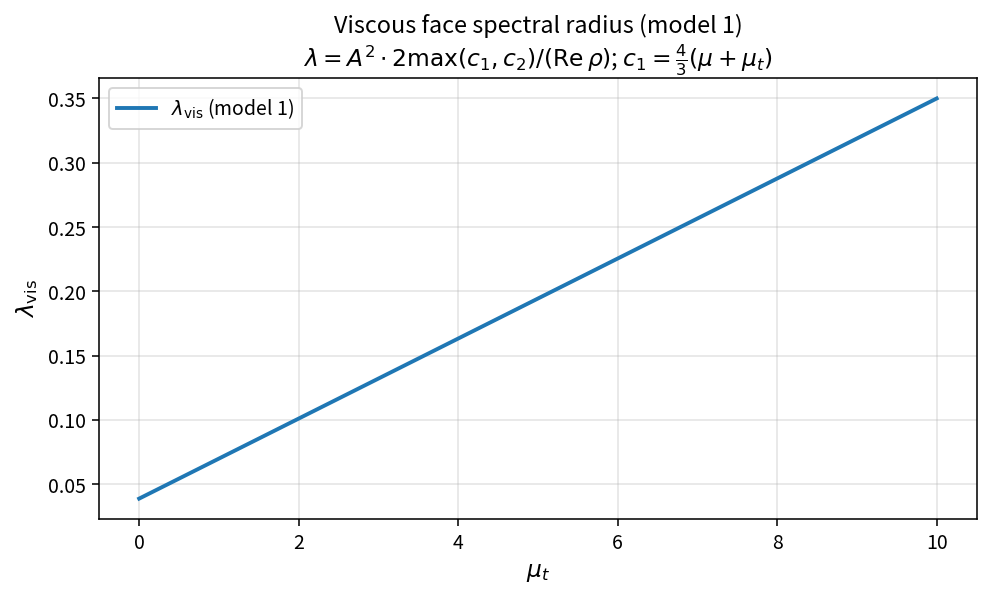

<!DOCTYPE html>
<html class="writer-html5" lang="en" data-content_root="../">
<head>
  <meta charset="utf-8" /><meta name="viewport" content="width=device-width, initial-scale=1" />

  <meta name="viewport" content="width=device-width, initial-scale=1.0" />
  <title>Viscous face spectral radius (model 1) &mdash; Scientific Computing 1.0 documentation</title>
      <link rel="stylesheet" type="text/css" href="../_static/pygments.css?v=b86133f3" />
      <link rel="stylesheet" type="text/css" href="../_static/css/theme.css?v=9edc463e" />

  
      <script src="../_static/jquery.js?v=5d32c60e"></script>
      <script src="../_static/_sphinx_javascript_frameworks_compat.js?v=2cd50e6c"></script>
      <script src="../_static/documentation_options.js?v=f2a433a1"></script>
      <script src="../_static/doctools.js?v=fd6eb6e6"></script>
      <script src="../_static/sphinx_highlight.js?v=6ffebe34"></script>
      <script defer="defer" src="https://cdn.jsdelivr.net/npm/mathjax@4/tex-mml-chtml.js"></script>
    <script src="../_static/js/theme.js"></script>
    <link rel="index" title="Index" href="../genindex.html" />
    <link rel="search" title="Search" href="../search.html" />
    <link rel="next" title="Viscous face spectral radius (model 2)" href="viscous_spectral_radius_model2.html" />
    <link rel="prev" title="Viscous face spectral radius (overview)" href="viscous_spectral_radius.html" /> 
</head>

<body class="wy-body-for-nav"> 
  <div class="wy-grid-for-nav">
    <nav data-toggle="wy-nav-shift" class="wy-nav-side">
      <div class="wy-side-scroll">
        <div class="wy-side-nav-search" >

          
          
          <a href="../index.html" class="icon icon-home">
            Scientific Computing
          </a>
<div role="search">
  <form id="rtd-search-form" class="wy-form" action="../search.html" method="get">
    <input type="text" name="q" placeholder="Search docs" aria-label="Search docs" />
    <input type="hidden" name="check_keywords" value="yes" />
    <input type="hidden" name="area" value="default" />
  </form>
</div>
        </div><div class="wy-menu wy-menu-vertical" data-spy="affix" role="navigation" aria-label="Navigation menu">
              <p class="caption" role="heading"><span class="caption-text">Get started</span></p>
<ul>
<li class="toctree-l1"><a class="reference internal" href="../info.html">OneFLOW</a></li>
<li class="toctree-l1"><a class="reference internal" href="../install/index.html">Install</a></li>
</ul>
<p class="caption" role="heading"><span class="caption-text">User Guides</span></p>
<ul>
<li class="toctree-l1"><a class="reference internal" href="../user.html">THEORY</a></li>
<li class="toctree-l1"><a class="reference internal" href="../cmd.html">Cmd</a></li>
<li class="toctree-l1"><a class="reference internal" href="../test.html">Test</a></li>
<li class="toctree-l1"><a class="reference internal" href="../workbench_user_guide_zh.html">OneFLOW Workbench 用户手册</a></li>
</ul>
<p class="caption" role="heading"><span class="caption-text">Reference</span></p>
<ul class="current">
<li class="toctree-l1"><a class="reference internal" href="../bash.html">Bash</a></li>
<li class="toctree-l1"><a class="reference internal" href="../cfd/index.html">CFD</a></li>
<li class="toctree-l1"><a class="reference internal" href="../cgns.html">CGNS</a></li>
<li class="toctree-l1"><a class="reference internal" href="../chatgpt.html">CHATGPT</a></li>
<li class="toctree-l1"><a class="reference internal" href="../cpp/index.html">CPP</a></li>
<li class="toctree-l1"><a class="reference internal" href="../cmake.html">CMake</a></li>
<li class="toctree-l1"><a class="reference internal" href="../cuda.html">CUDA</a></li>
<li class="toctree-l1"><a class="reference internal" href="../design_patterns.html">Design Patterns</a></li>
<li class="toctree-l1"><a class="reference internal" href="../eigen.html">Eigen3</a></li>
<li class="toctree-l1"><a class="reference internal" href="../git.html">Git</a></li>
<li class="toctree-l1"><a class="reference internal" href="../git.html#contexts">Contexts</a></li>
<li class="toctree-l1"><a class="reference internal" href="../fortran.html">Fortran</a></li>
<li class="toctree-l1"><a class="reference internal" href="../hdf5.html">HDF5</a></li>
<li class="toctree-l1"><a class="reference internal" href="../hpc.html">HPC</a></li>
<li class="toctree-l1"><a class="reference internal" href="../julia.html">Julia</a></li>
<li class="toctree-l1"><a class="reference internal" href="../jupyter.html">Jupyter Notebook</a></li>
<li class="toctree-l1"><a class="reference internal" href="../latex.html">LaTeX</a></li>
<li class="toctree-l1"><a class="reference internal" href="../makefile.html">Makefile</a></li>
<li class="toctree-l1"><a class="reference internal" href="../metis.html">METIS</a></li>
<li class="toctree-l1"><a class="reference internal" href="../mkdocs.html">MkDocs</a></li>
<li class="toctree-l1"><a class="reference internal" href="../modules.html">Environment Modules</a></li>
<li class="toctree-l1"><a class="reference internal" href="../mpi.html">MPI</a></li>
<li class="toctree-l1 current"><a class="reference internal" href="index.html">Numerical analysis</a><ul class="current">
<li class="toctree-l2"><a class="reference internal" href="tdma.html">Tridiagonal matrix algorithm</a></li>
<li class="toctree-l2"><a class="reference internal" href="ctdma.html">Cyclic Tridiagonal Systems</a></li>
<li class="toctree-l2"><a class="reference internal" href="fourier_transform.html">FOURIER TRANSFORMS</a></li>
<li class="toctree-l2"><a class="reference internal" href="fftw.html">FFTW</a></li>
<li class="toctree-l2"><a class="reference internal" href="limiter.html">Limiter face contracts</a></li>
<li class="toctree-l2"><a class="reference internal" href="gradient.html">Green-Gauss gradient contracts</a></li>
<li class="toctree-l2"><a class="reference internal" href="vis_face_geometry.html">Viscous face geometry contracts</a></li>
<li class="toctree-l2"><a class="reference internal" href="limited_face_reconstruction.html">Limited face reconstruction</a></li>
<li class="toctree-l2"><a class="reference internal" href="euler_convective_flux.html">Euler convective face flux</a></li>
<li class="toctree-l2"><a class="reference internal" href="roe_average.html">Roe average state</a></li>
<li class="toctree-l2"><a class="reference internal" href="ausm_splits.html">AUSM Mach and pressure splits</a></li>
<li class="toctree-l2"><a class="reference internal" href="ideal_gas_thermo.html">Ideal-gas thermodynamic contracts</a></li>
<li class="toctree-l2"><a class="reference internal" href="roe_dissipation.html">Roe dissipation coefficients</a></li>
<li class="toctree-l2"><a class="reference internal" href="viscous_heat_flux.html">Viscous conductive heat flux</a></li>
<li class="toctree-l2"><a class="reference internal" href="sutherland_viscosity.html">Sutherland viscosity law</a></li>
<li class="toctree-l2"><a class="reference internal" href="spectral_radius.html">Face spectral radius and local time step</a></li>
<li class="toctree-l2"><a class="reference internal" href="references.html">References and external manuals</a></li>
<li class="toctree-l2"><a class="reference internal" href="boundary_velocity.html">Boundary velocity images</a></li>
<li class="toctree-l2"><a class="reference internal" href="isothermal_wall.html">Isothermal wall density and temperature images</a></li>
<li class="toctree-l2"><a class="reference internal" href="turb_scalar_upwind.html">Turbulence scalar convective upwind flux</a></li>
<li class="toctree-l2"><a class="reference internal" href="turb_spectrum.html">Turbulence face spectral radius</a></li>
<li class="toctree-l2"><a class="reference internal" href="sa_closure.html">Spalart-Allmaras closure functions</a></li>
<li class="toctree-l2"><a class="reference internal" href="sa_source.html">Spalart-Allmaras source residual</a></li>
<li class="toctree-l2"><a class="reference internal" href="sa_eddy_viscosity.html">SA eddy viscosity</a></li>
<li class="toctree-l2"><a class="reference internal" href="sst_k_source.html">SST k-equation production and dissipation</a></li>
<li class="toctree-l2"><a class="reference internal" href="sst_f1_blending.html">SST blending function F1</a></li>
<li class="toctree-l2"><a class="reference internal" href="verification_layers.html">Verification layers (copyable policy)</a></li>
<li class="toctree-l2"><a class="reference internal" href="wilcox_fbeta.html">Wilcox f_k and f_w modifiers</a></li>
<li class="toctree-l2"><a class="reference internal" href="sst_residual_assembly.html">SST residual assembly (Menter linearization)</a></li>
<li class="toctree-l2"><a class="reference internal" href="turb_lusgs.html">Turbulence LUSGS scalar sweep kernels</a></li>
<li class="toctree-l2"><a class="reference internal" href="sst_eddy_viscosity.html">SST eddy viscosity and F2</a></li>
<li class="toctree-l2"><a class="reference internal" href="turb_wall_bc.html">Turbulence viscous-wall boundary values</a></li>
<li class="toctree-l2"><a class="reference internal" href="sa_update_bounds.html">SA working-variable bounds after update</a></li>
<li class="toctree-l2"><a class="reference internal" href="sst_update_floors.html">SST and transition update floors</a></li>
<li class="toctree-l2"><a class="reference internal" href="turb_farfield_bc.html">Turbulence far-field state selection</a></li>
<li class="toctree-l2"><a class="reference internal" href="sa_under_relax.html">SA under-relaxed working-variable update</a></li>
<li class="toctree-l2"><a class="reference internal" href="lusgs_viscous_spectrum.html">LUSGS viscous spectral contribution</a></li>
<li class="toctree-l2"><a class="reference internal" href="time_integral_control.html">OneFLOW Time-Integration Control</a></li>
<li class="toctree-l2"><a class="reference internal" href="cfl_ramp.html">Time stepping: CFL, physical time, and dual-time status</a></li>
<li class="toctree-l2"><a class="reference internal" href="viscous_spectral_radius.html">Viscous face spectral radius (overview)</a></li>
<li class="toctree-l2 current"><a class="current reference internal" href="#">Viscous face spectral radius (model 1)</a><ul>
<li class="toctree-l3"><a class="reference internal" href="#purpose">Purpose</a></li>
<li class="toctree-l3"><a class="reference internal" href="#formula">Formula</a></li>
<li class="toctree-l3"><a class="reference internal" href="#derivation">Derivation</a><ul>
<li class="toctree-l4"><a class="reference internal" href="#diffusion-model">Diffusion model</a></li>
<li class="toctree-l4"><a class="reference internal" href="#momentum-channel">Momentum channel</a></li>
<li class="toctree-l4"><a class="reference internal" href="#energy-channel">Energy channel</a></li>
<li class="toctree-l4"><a class="reference internal" href="#assembly">Assembly</a></li>
<li class="toctree-l4"><a class="reference internal" href="#relation-to-inviscid-spectrum">Relation to inviscid spectrum</a></li>
</ul>
</li>
<li class="toctree-l3"><a class="reference internal" href="#source-map">Source map</a></li>
<li class="toctree-l3"><a class="reference internal" href="#what-this-proves-does-not-prove">What this proves / does not prove</a></li>
<li class="toctree-l3"><a class="reference internal" href="#references">References</a></li>
</ul>
</li>
<li class="toctree-l2"><a class="reference internal" href="viscous_spectral_radius_model2.html">Viscous face spectral radius (model 2)</a></li>
<li class="toctree-l2"><a class="reference internal" href="viscous_spectral_radius_model3.html">Viscous face spectral radius (model 3)</a></li>
</ul>
</li>
<li class="toctree-l1"><a class="reference internal" href="../oneapi.html">oneAPI</a></li>
<li class="toctree-l1"><a class="reference internal" href="../oneflow.html">OneFLOW-CFD</a></li>
<li class="toctree-l1"><a class="reference internal" href="../openacc.html">OpenACC</a></li>
<li class="toctree-l1"><a class="reference internal" href="../opencl.html">OpenCL</a></li>
<li class="toctree-l1"><a class="reference internal" href="../opengl.html">OpenGL</a></li>
<li class="toctree-l1"><a class="reference internal" href="../openmp.html">OpenMP</a></li>
<li class="toctree-l1"><a class="reference internal" href="../powershell.html">PowerShell</a></li>
<li class="toctree-l1"><a class="reference internal" href="../python/index.html">Python</a></li>
<li class="toctree-l1"><a class="reference internal" href="../qt.html">Qt</a></li>
<li class="toctree-l1"><a class="reference internal" href="../regex.html">Regular Expressions</a></li>
<li class="toctree-l1"><a class="reference internal" href="../science.html">Science</a></li>
<li class="toctree-l1"><a class="reference internal" href="../sphinx.html">Sphinx</a></li>
<li class="toctree-l1"><a class="reference internal" href="../system/index.html">System</a></li>
<li class="toctree-l1"><a class="reference internal" href="../taichi.html">Taichi</a></li>
<li class="toctree-l1"><a class="reference internal" href="../tcltk.html">Tcl/tk</a></li>
<li class="toctree-l1"><a class="reference internal" href="../tecplot.html">Tecplot</a></li>
<li class="toctree-l1"><a class="reference internal" href="../unreal_engine.html">Unreal Engine</a></li>
<li class="toctree-l1"><a class="reference internal" href="../vcpkg.html">vcpkg</a></li>
<li class="toctree-l1"><a class="reference internal" href="../yaml.html">yaml</a></li>
</ul>
<p class="caption" role="heading"><span class="caption-text">OneFLOW Design and Development</span></p>
<ul>
<li class="toctree-l1"><a class="reference internal" href="../architecture_review.html">OneFLOW Architecture Review and Development Principles</a></li>
<li class="toctree-l1"><a class="reference internal" href="../verification_evidence_lifecycle.html">Verification and Evidence Lifecycle</a></li>
<li class="toctree-l1"><a class="reference internal" href="../runtime_architecture.html">OneFLOW Runtime Architecture and Development Guide</a></li>
<li class="toctree-l1"><a class="reference internal" href="../runtime_case_lifecycle.html">Runtime Case Lifecycle and Production Entry</a></li>
<li class="toctree-l1"><a class="reference internal" href="../database_architecture.html">Database Architecture and Data Access Contracts</a></li>
<li class="toctree-l1"><a class="reference internal" href="../evolutionary_computation_architecture.html">Evolutionary Scientific-Computing Architecture</a></li>
<li class="toctree-l1"><a class="reference internal" href="../mesh_architecture.html">OneFLOW Mesh Architecture</a></li>
<li class="toctree-l1"><a class="reference internal" href="../gmsh_interface.html">Gmsh MSH Interface</a></li>
<li class="toctree-l1"><a class="reference internal" href="../grid_topology.html">Grid Topology and Validation</a></li>
<li class="toctree-l1"><a class="reference internal" href="../face_stage_pipeline.html">Face Stage Pipeline</a></li>
<li class="toctree-l1"><a class="reference internal" href="../workbench_architecture.html">OneFLOW Workbench Architecture</a></li>
<li class="toctree-l1"><a class="reference internal" href="../contract_workbench_information_architecture.html">Contract Workbench Information Architecture</a></li>
</ul>
<ul>
<li class="toctree-l1"><a class="reference internal" href="../case_parameter_design.html">Case Parameter Design and GUI Editing</a></li>
<li class="toctree-l1"><a class="reference internal" href="../engineering_nomenclature.html">Engineering nomenclature and semantic cross-reference</a></li>
</ul>

        </div>
      </div>
    </nav>

    <section data-toggle="wy-nav-shift" class="wy-nav-content-wrap"><nav class="wy-nav-top" aria-label="Mobile navigation menu" >
          <i data-toggle="wy-nav-top" class="fa fa-bars"></i>
          <a href="../index.html">Scientific Computing</a>
      </nav>

      <div class="wy-nav-content">
        <div class="rst-content">
          <div role="navigation" aria-label="Page navigation">
  <ul class="wy-breadcrumbs">
      <li><a href="../index.html" class="icon icon-home" aria-label="Home"></a></li>
          <li class="breadcrumb-item"><a href="index.html">Numerical analysis</a></li>
      <li class="breadcrumb-item active">Viscous face spectral radius (model 1)</li>
      <li class="wy-breadcrumbs-aside">
            <a href="../_sources/numerical/viscous_spectral_radius_model1.rst.txt" rel="nofollow"> View page source</a>
      </li>
  </ul>
  <hr/>
</div>
          <div role="main" class="document" itemscope="itemscope" itemtype="http://schema.org/Article">
           <div itemprop="articleBody">
             
  <section id="viscous-face-spectral-radius-model-1">
<h1>Viscous face spectral radius (model 1)<a class="headerlink" href="#viscous-face-spectral-radius-model-1" title="Link to this heading"></a></h1>
<section id="purpose">
<h2>Purpose<a class="headerlink" href="#purpose" title="Link to this heading"></a></h2>
<p>Model 1 estimates the viscous contribution to the local spectral radius for
explicit or semi-implicit time-step control. It is a Blazek-style engineering
bound, not an exact Jacobian eigenvalue.</p>
</section>
<section id="formula">
<h2>Formula<a class="headerlink" href="#formula" title="Link to this heading"></a></h2>
<p>With laminar viscosity <span class="math notranslate nohighlight">\(\mu\)</span>, turbulent viscosity <span class="math notranslate nohighlight">\(\mu_t\)</span>, face
area <span class="math notranslate nohighlight">\(A\)</span>, density <span class="math notranslate nohighlight">\(\rho\)</span>, and Reynolds number <span class="math notranslate nohighlight">\(\mathrm{Re}\)</span>:</p>
<div class="math notranslate nohighlight">
\[ \begin{align}\begin{aligned}c_1=\frac{4}{3}(\mu+\mu_t),\qquad
c_2=\gamma\left(\frac{\mu}{\mathrm{Pr}_l}+\frac{\mu_t}{\mathrm{Pr}_t}\right)\\\lambda_{\mathrm{vis}}=A^{2}\cdot\frac{2\max(c_1,c_2)}{\mathrm{Re}\,\rho}\end{aligned}\end{align} \]</div>
<p>OneFLOW stores inverse Prandtl numbers, so
<span class="math notranslate nohighlight">\(c_2=\gamma(\mu\cdot\mathrm{invPr}_l+\mu_t\cdot\mathrm{invPr}_t)\)</span>.</p>
</section>
<section id="derivation">
<h2>Derivation<a class="headerlink" href="#derivation" title="Link to this heading"></a></h2>
<section id="diffusion-model">
<h3>Diffusion model<a class="headerlink" href="#diffusion-model" title="Link to this heading"></a></h3>
<p>A one-dimensional diffusion equation <span class="math notranslate nohighlight">\(u_t=\nu u_{xx}\)</span> damps a Fourier
mode with rate <span class="math notranslate nohighlight">\(\nu k^{2}\)</span>. On a finite-volume cell, the mesh wave
number is estimated from the face-to-volume scale:</p>
<div class="math notranslate nohighlight">
\[k \sim \frac{A}{V}
\quad\Rightarrow\quad
\text{decay rate} \sim \nu\left(\frac{A}{V}\right)^{2}.\]</div>
<p>For time-step control the viscous spectral contribution is therefore taken
proportional to <span class="math notranslate nohighlight">\(A^{2}\nu_{\mathrm{eff}}\)</span>, with density and Reynolds
scaling so that the result has the same dimensions as the inviscid face
spectral radius and can enter</p>
<div class="math notranslate nohighlight">
\[\Delta t \sim \frac{\mathrm{CFL}\cdot V}{\sum(\lambda_{\mathrm{inv}}+\lambda_{\mathrm{vis}})}.\]</div>
</section>
<section id="momentum-channel">
<h3>Momentum channel<a class="headerlink" href="#momentum-channel" title="Link to this heading"></a></h3>
<p>The effective dynamic viscosity is <span class="math notranslate nohighlight">\(\mu+\mu_t\)</span>. A three-dimensional
engineering factor <span class="math notranslate nohighlight">\(4/3\)</span> accounts for longitudinal / bulk-viscous
effects in the spectral estimate:</p>
<div class="math notranslate nohighlight">
\[c_1=\frac{4}{3}(\mu+\mu_t).\]</div>
</section>
<section id="energy-channel">
<h3>Energy channel<a class="headerlink" href="#energy-channel" title="Link to this heading"></a></h3>
<p>Heat conduction uses laminar and turbulent Prandtl numbers. With an ideal-gas
factor <span class="math notranslate nohighlight">\(\gamma\)</span> the energy diffusivity scale is</p>
<div class="math notranslate nohighlight">
\[c_2=\gamma\left(\frac{\mu}{\mathrm{Pr}_l}+\frac{\mu_t}{\mathrm{Pr}_t}\right).\]</div>
</section>
<section id="assembly">
<h3>Assembly<a class="headerlink" href="#assembly" title="Link to this heading"></a></h3>
<p>The tighter (larger) of the two channels is retained, scaled by
<span class="math notranslate nohighlight">\(2/(\mathrm{Re}\,\rho)\)</span> and by <span class="math notranslate nohighlight">\(A^{2}\)</span>:</p>
<div class="math notranslate nohighlight">
\[\lambda_{\mathrm{vis}}
=A^{2}\cdot\frac{2\max(c_1,c_2)}{\mathrm{Re}\,\rho}.\]</div>
<p>The factor <span class="math notranslate nohighlight">\(2\)</span> is an engineering constant of the estimate, not a unique
eigenvalue coefficient from a single continuous operator.</p>
</section>
<section id="relation-to-inviscid-spectrum">
<h3>Relation to inviscid spectrum<a class="headerlink" href="#relation-to-inviscid-spectrum" title="Link to this heading"></a></h3>
<p>The inviscid face contribution remains</p>
<div class="math notranslate nohighlight">
\[\lambda_{\mathrm{inv}}=\frac{1}{2}A\bigl(|v_n|+c\bigr)\]</div>
<p>(<code class="docutils literal notranslate"><span class="pre">InviscidFaceSpectralRadius</span></code>). Cell time steps may combine inviscid and
viscous limits through <code class="docutils literal notranslate"><span class="pre">CellTimeStepFromSpectrum</span></code> and
<code class="docutils literal notranslate"><span class="pre">CombineInvAndVisTimeStep</span></code>.</p>
</section>
</section>
<section id="source-map">
<h2>Source map<a class="headerlink" href="#source-map" title="Link to this heading"></a></h2>
<ul class="simple">
<li><p><code class="docutils literal notranslate"><span class="pre">ViscousFaceSpectralRadiusModel1</span></code> in <code class="docutils literal notranslate"><span class="pre">TimeStepPolicy</span></code></p></li>
<li><p>Related: <code class="docutils literal notranslate"><span class="pre">InviscidFaceSpectralRadius</span></code>, <code class="docutils literal notranslate"><span class="pre">CellTimeStepFromSpectrum</span></code></p></li>
<li><p>Tests: <code class="docutils literal notranslate"><span class="pre">tests/solver/timestep_policy_test.cpp</span></code>
(<code class="docutils literal notranslate"><span class="pre">ViscousFaceSpectralRadiusModel1CurveMatchesClosedForm</span></code>)</p></li>
<li><p>Theory table: <code class="docutils literal notranslate"><span class="pre">tools/verification/data/viscous_spectral_radius_model1_theory.csv</span></code></p></li>
<li><p>Contract Workbench id: <code class="docutils literal notranslate"><span class="pre">viscous_spectral_radius_model1</span></code></p></li>
</ul>
<a class="reference internal image-reference" href="../_images/viscous_spectral_radius_model1_theory.png">
</a>
</section>
<section id="what-this-proves-does-not-prove">
<h2>What this proves / does not prove<a class="headerlink" href="#what-this-proves-does-not-prove" title="Link to this heading"></a></h2>
<p><strong>Proves:</strong> model-1 algebra matches the pure API on a sample <span class="math notranslate nohighlight">\(\mu_t\)</span> grid;
scaling with <span class="math notranslate nohighlight">\(A^{2}\)</span> holds in the unit test.</p>
<p><strong>Does not prove:</strong> exact Jacobian spectral radius; optimality of CFL on a
case mesh; models 2 and 3.</p>
</section>
<section id="references">
<h2>References<a class="headerlink" href="#references" title="Link to this heading"></a></h2>
<ul class="simple">
<li><p>J. Blazek, <em>Computational Fluid Dynamics: Principles and Applications</em>,
Elsevier (2nd/3rd ed.), temporal discretisation / maximum time step:
viscous spectral radius with
(maxigl(   frac{4}{3}(mu_L+mu_T),gamma(mu_L/mathrm{Pr}_L+mu_T/mathrm{Pr}_T)igr))
and surface-element scaling. Primary structural source for model 1.</p></li>
<li><p>Overview and comparative notes: <a class="reference internal" href="viscous_spectral_radius.html"><span class="doc">Viscous face spectral radius (overview)</span></a>.</p></li>
<li><p>SU2 / AIAA papers: edge-based (lambda_{mathrm{vis}}proptomu S^{2}/</p></li>
</ul>
<dl class="simple">
<dt>ho)</dt><dd><p>for comparison of scaling only.</p>
</dd>
</dl>
<ul class="simple">
<li><p>OneFLOW intermediate curve:
<code class="docutils literal notranslate"><span class="pre">tools/verification/data/viscous_spectral_radius_model1_theory.csv</span></code>.</p></li>
</ul>
</section>
</section>


           </div>
          </div>
          <footer><div class="rst-footer-buttons" role="navigation" aria-label="Footer">
        <a href="viscous_spectral_radius.html" class="btn btn-neutral float-left" title="Viscous face spectral radius (overview)" accesskey="p" rel="prev"><span class="fa fa-arrow-circle-left" aria-hidden="true"></span> Previous</a>
        <a href="viscous_spectral_radius_model2.html" class="btn btn-neutral float-right" title="Viscous face spectral radius (model 2)" accesskey="n" rel="next">Next <span class="fa fa-arrow-circle-right" aria-hidden="true"></span></a>
    </div>

  <hr/>

  <div role="contentinfo">
    <p>&#169; Copyright 2017-2026, eric.</p>
  </div>

  Built with <a href="https://www.sphinx-doc.org/">Sphinx</a> using a
    <a href="https://github.com/readthedocs/sphinx_rtd_theme">theme</a>
    provided by <a href="https://readthedocs.org">Read the Docs</a>.
   

</footer>
        </div>
      </div>
    </section>
  </div>
  <script>
      jQuery(function () {
          SphinxRtdTheme.Navigation.enable(true);
      });
  </script> 

</body>
</html>